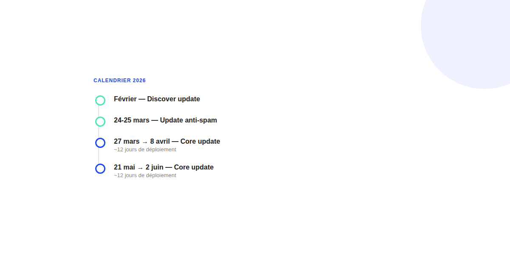
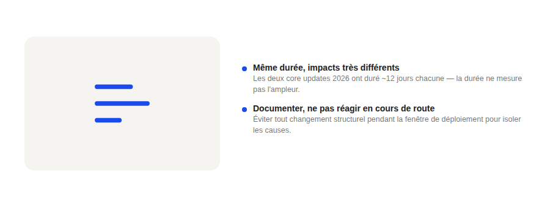

Les core updates Google de 2026 : le calendrier et ce qu'il faut vraiment surveiller
Deux core updates confirmées en 2026 à ce jour, précédées d'une update anti-spam et d'une update Discover rapprochées en début d'année : le rythme s'est densifié. Ce qui compte n'est pas de connaître les dates par cœur, mais de savoir quoi faire (et ne pas faire) pendant et après.

2026 a été une année dense pour les mises à jour de l'algorithme de recherche. Entre une update Discover en février, une update anti-spam fin mars, et deux core updates confirmées en mars-avril puis mai-juin, le rythme a été nettement plus serré que les années précédentes où une seule core update majeure par trimestre était la norme. Pour qui suit son trafic organique, c'est un signal à prendre au sérieux : la fenêtre pour isoler proprement la cause d'une variation se resserre.
Le calendrier confirmé
La update Discover de février a ouvert l'année. Fin mars, une update de lutte contre le spam s'est déployée sur deux jours (24-25 mars), immédiatement suivie du démarrage de la première core update de l'année le 27 mars, complétée le 8 avril — environ douze jours de déploiement. La seconde core update a démarré le 21 mai, Google annonçant alors jusqu'à deux semaines de déploiement, pour se terminer autour du 2 juin — une durée quasi identique à la précédente, environ douze jours également.
Pourquoi la durée ne dit rien de l'impact
Une erreur fréquente consiste à interpréter la longueur du déploiement comme un indicateur de son ampleur. Ce n'est pas le cas : Google déploie progressivement par lots de serveurs et de régions pour limiter les effets de bord techniques, pas pour doser l'impact. Un site peut connaître une variation forte dès les premiers jours et rester stable ensuite, ou l'inverse. La seule chose que la durée du déploiement indique de façon fiable, c'est la fenêtre de temps pendant laquelle les variations observées ne doivent pas être interprétées comme définitives.

Ce qu'il faut surveiller pendant le déploiement
Pendant une fenêtre de déploiement confirmée, l'essentiel est de documenter sans réagir : capturer les positions et le trafic avant le début annoncé, éviter tout changement structurel majeur (refonte, migration d'URL, changement de CMS) qui rendrait impossible de distinguer l'effet de la mise à jour de celui du changement, et comparer l'évolution à celle d'un échantillon de sites comparables dans le même secteur plutôt qu'à son seul historique.
Se méfier des récits de « gagnants et perdants »
Après chaque core update, des analyses circulent avec des listes de sites qui auraient gagné ou perdu massivement. Ces récits reposent presque toujours sur des échantillons restreints et non représentatifs, et confondent fréquemment corrélation temporelle et causalité. Sans accès aux données internes de Google sur les changements de pondération exacts, la prudence la plus honnête reste de constater ce qui a changé sur son propre site et son secteur, pas de généraliser à partir d'un cas isolé lu ailleurs.
FAQ
Une core update dure-t-elle toujours environ deux semaines ?
Les deux core updates confirmées en 2026 ont duré environ douze jours chacune, ce qui est dans la fourchette habituelle (une à deux semaines), mais Google ne garantit aucune durée fixe et peut l'étendre en cours de déploiement.
Faut-il changer son site pendant qu'une core update se déploie ?
Non, ce n'est généralement pas le bon moment pour un changement structurel majeur (refonte, migration) : les variations de position observées en cours de déploiement reflètent le déploiement lui-même et ne permettent pas de juger proprement l'effet d'un nouveau changement.
Comment savoir si une baisse de trafic est due à une core update ou à autre chose ?
Vérifiez d'abord que la baisse coïncide dans le temps avec une fenêtre de déploiement confirmée par Google, puis comparez l'évolution à celle de sites comparables dans votre secteur avant de conclure : une baisse isolée sur un seul site, sans corrélation sectorielle, a souvent une autre cause (technique, saisonnière, concurrentielle).
Envie d'un diagnostic de votre visibilité SEO après les dernières mises à jour ?
Pour aller plus loin, voir la page SEO, et l'article Impact des AI Overviews sur le trafic SEO.
Pour continuer sur ce sujet.